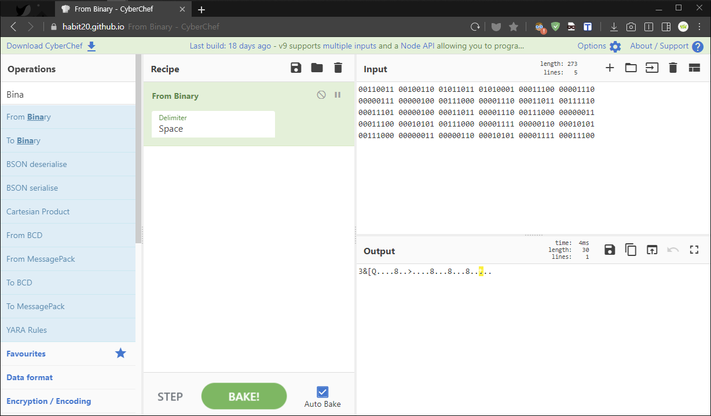
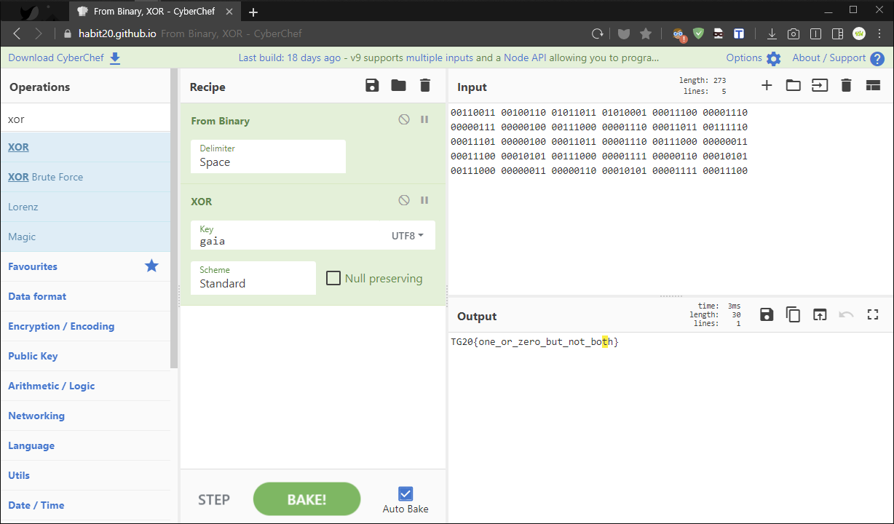

[TGHACK20_n00b6] Is This The One? Or Zero?
Help me decrypt this, it’s important for gaia!
1 | 00110011 00100110 01011011 01010001 00011100 00001110 |
“이 내용 해독을 도와주세요, 가이아(gaia)에게 중요해요!!”
✔ Solution
이 문제는 '0(Zero)'과 '1(One)'로만 이루어진 2진수 바이너리(Binary) 값이다.
따라서 16진법(HEX) 값으로 변환 후 아스키코드(ASCII) 테이블을 보면 정답이 나올 것 같지만,

위와 같이 결과값(Output)이 문자열 길이는 우리가 아는 포맷인데 알아볼 수 없는 언어로 나왔다.
여기서 우리는 한 가지 사실을 인지해야 한다. “바이너리(Binary) 값은 정상값이 아니다…”
그렇다면 비트를 옮겼거나 AND, OR, XOR 등 한번 혹은 여러번 연산시켜 변조시켰을 가능성이 높다.
자세히 문제를 살펴보니 gaia 단어가 상당히 눈에 거슬리고 심지어 강조 표시까지 진행해둔 상태였다.

CyberChef Tool 도구를 통해 레시피 From Binary + AND, OR, XOR 등으로 두고 키값(gaia)을 넣어줬다.
키값(gaia)을 통해 모두 하나씩 진행해보니 XOR 연산에서 정상 결과값(Output)을 빠르게 발견했다.
처음 문제를 접하면 너무 단순하고 쉬워서 지문을 자세히 보지않는 경우가 발생하거나
8비트 문자값(Char)을 확인하기 위해서 `UTF-8’ 인코딩을 안하는 경우가 종종 발생한다.
따라서 이 두가지 부분을 꼭 유의해서 AND, OR, XOR 등 연산 후 플래그를 빠르게 얻어보자.
1 | TG20{one_or_zero_but_not_both} |
✔ Notes
Rmx.